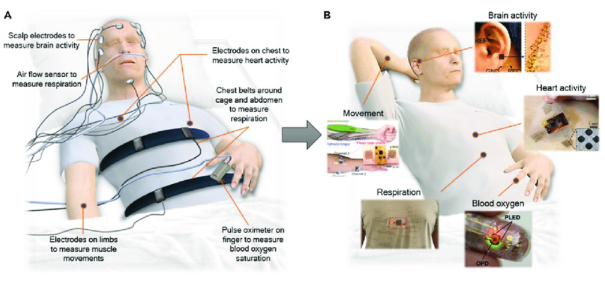
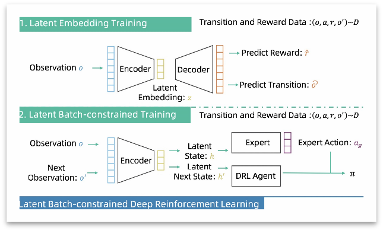
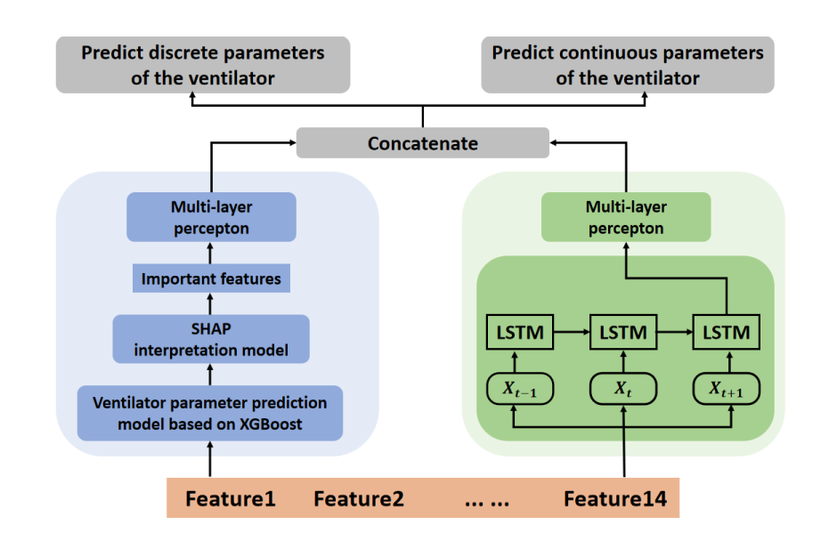
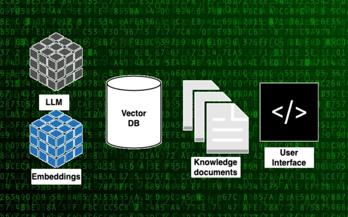
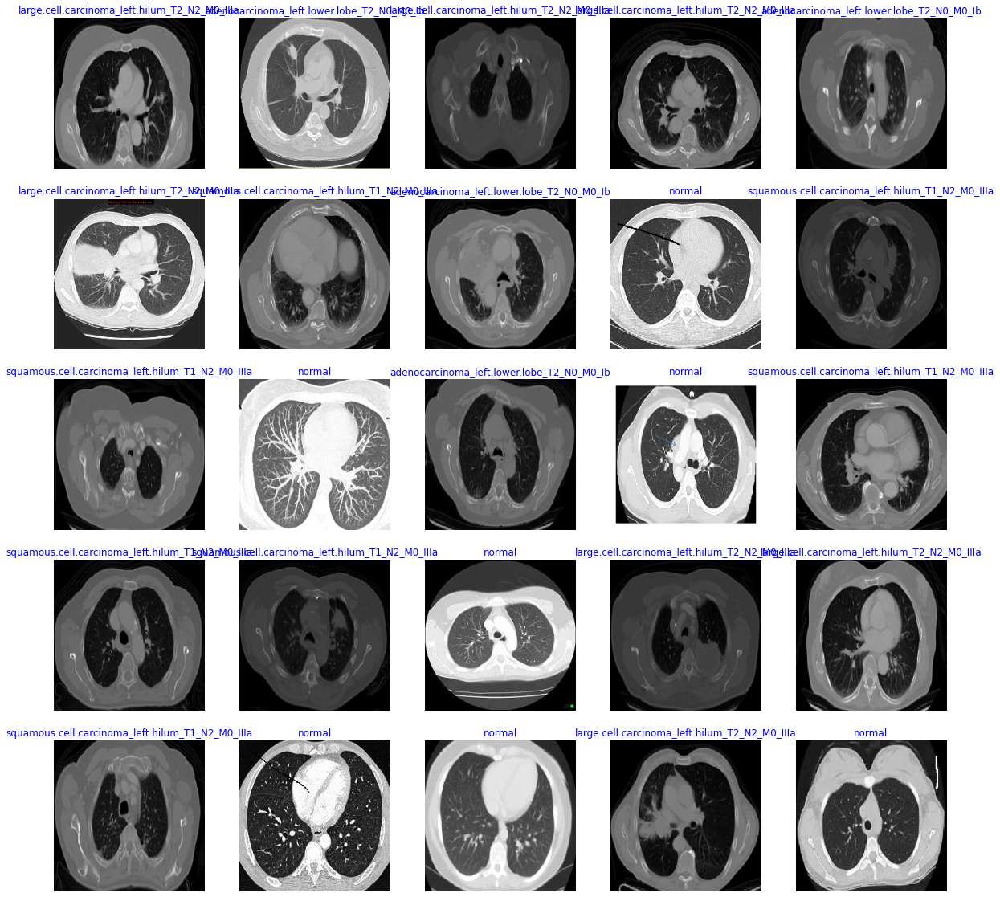

Xihe QiuAssociate Professor
School of Electronic and Electrical Engineering |
|


Biography
I am an Associate Professor at School of Electronic and Electrical Engineering, Shanghai University of Engineering Science. I completed my undergraduate studies in Biomedical Engineering at Northeastern University in 2014. Subsequently, I obtained my Ph.D. from the National University of Singapore in September 2018. My research interest is AI for Healthcare, such as artificial intelligence and its applications on healthcare (please refer to the current projects for details).
My research interests include artificial intelligence and its applications on medical image computing, robotic surgical data science. I recently work on spatial-temporal representation learning, data efficient learning, and multi-modality learning.
*Opening!* My BIOAIT research group accepts 3-5 master's students annually. If you are interested in my research direction, please feel free to email me for further inquiries.
*NEWS!* Our work is accepted as oral by ICRA 2024!(Author: Haoyu Wang, Xiaoyu Tan, Xihe Qiu, Chao Qu)https://arxiv.org/html/2403.15100v1 Our work is accepted by SIGIR 2024!(Author: Xiaoyu Tan, Leijun Cheng, Xihe Qiu, et. al)
Fundings
- Research on Model-Constrained Reinforcement Learning-Driven Clinical Decision Support Method, funded by the National Natural Science Foundation, 2021-2024. (Funding 30,0000)
- Research on Comprehensive Diagnostic Algorithm Application for Sleep Breathing Disorders Patients, funded by the Shanghai Natural Science Foundation, 2023-2026. (Funding 20,0000)
- Youth AI Innovation Project Design and Guidance, commissioned by a corporate entity, 2020-2023. (Funding 45,0000)
- Intelligent Diagnosis of Sleep Breathing Disorders - Interdisciplinary Innovation Team, affiliated with the Eye&ENT hospital of Fudan University, Fudan University, 2022-2025. (Funding 30,0000)
Research Topics [Google Scholar]
|  | Research on Comprehensive Personalized Assisted Diagnosis for Sleep Breathing Disorder Patients. Participating group member: Yingchen Wei, Bin Li, Chenghao Wang, Huijie Tong. Collaborator: Eye&ENT hospital of Fudan University, Fudan University. In response to the practical challenges in diagnosing Obstructive Sleep Apnea-Hypopnea Syndrome (OSAHS) with invasive treatments and cumbersome examinations, this project focuses on researching an intelligent assisted diagnosis algorithm for OSAHS throughout the entire patient journey. It aims to address the complexities, time-consuming nature, and high manpower costs associated with monitoring multi-channel polysomnography in clinical settings. By constructing a time-series model with high accuracy and generalization performance, the project precisely analyzes and assesses patients' snoring patterns. Leveraging this snoring time-series model, it achieves an accurate classification of disease severity, enabling a streamlined, precise, and cost-effective progressive clinical assisted diagnosis. This advancement aids hospitals in improving diagnostic efficiency and accuracy. |
|  | 2.Research on Model-Constrained Reinforcement Learning-Driven Clinical Decision Support Method. Participating group member: Bo Zhang, Yongxin Deng, Shaotao Chen, Yajun Ru. Collaborator: National University of Singapore, Bielefeld University. Developing deep reinforcement learning algorithms for optimizing parameters recommendation in respiratory machine discrete/continuous hybrid features, as well as clinical drug dosage recommendations, and other clinical decision support recommendations. |

|
Research on Video Nystagmography Classification for Benign Paroxysmal Positional Vertigo (BPPV). Participating group member: Shaojie Shi Collaborator: Eye&ENT hospital of Fudan University, Fudan University The analysis of eye movement characteristics in BPPV patients is crucial for the diagnosis of BPPV. In clinical practice, eye movement information is typically obtained through positional tests. Video Nystagmography technology significantly enhances the detection rate of BPPV eye movements. In this study, we developed a computer-aided diagnostic method and compared it with manual diagnosis. The computer-aided diagnostic approach demonstrates objectivity, high efficiency, and considerable clinical value compared to traditional manual methods. |
|  | Research on Prediction Algorithms Based on Time-Series Models. Participating group member: Haoyu Wang, Siyue Shao, Jiahui Qian, Yajun Ru Collaborator: Eye&ENT hospital of Fudan University, Fudan University Time-series models find extensive application across various domains, notably in the prediction of clinical events and energy-related forecasts. In the clinical domain, leveraging past observed clinical events (such as past medication instructions or previous laboratory measurements) or physiological signals enables the anticipation of a series of future events. This proactive approach enables healthcare practitioners to intervene in advance and prepare resources, thus enhancing the overall quality of patient care and preparedness for clinical events. |
|  | Research on Developing more Reliable Large Language Models (LLMs) Participating group member: Leijun Cheng, Shaojie Shi, Teqi Hao Collaborator: INF Technology (Shanghai) Co. Ltd, Fudan University Large Language Models (LLMs), such as ChatGPT, GPT-4, BARD, Claude, have made rapid and remarkable progress in the field of natural language processing. Our aim is to create, enhance, fine-tune, and conduct research by integrating existing LLMs with our medical applications. |
|  | 6.Advancements in Image-Assisted Diagnostic Algorithms for Pulmonary Tumors. Participating group member: xxx Collaborator: Shanghai Pulmonary Hospital Numerous studies have shown that radiomics has significant advantages in the diagnosis and treatment of lung cancer. Radiomics has evolved into a valuable tool for assisting in the diagnosis, analysis, and prediction of lung cancer metastasis. Our objective is to research state-of-the-art algorithms to aid in the diagnostic process. |
Publications (selective):
| 1. Qiu, X., Tan, X., Li, Q., Chen, S., Ru, Y., & Jin, Y. (2022). A latent batch-constrained deep reinforcement learning approach for precision dosing clinical decision support. Knowledge-Based Systems, 237, 107689. (SCI; IF: 8.038, first author) |
| 2. Qiu, X., Tan, X., Yan, F., Su, Q., Chen, J., & Jiang, X. (2021). Semi-supervised recommender system for bone implant ratio recommendation. Journal of Ambient Intelligence and Humanized Computing, 1-10. (SCI; IF: 7.104, first author) |
| 3. Chen, S., Qiu, X.*, Tan, X., Fang, Z., & Jin, Y. (2022). A Model-based Hybrid Soft Actor-Critic Deep Reinforcement Learning Algorithm for Optimal Ventilator Settings. Information Sciences, 611,47-64. (SCI; IF: 8.233, Corresponding author) |
| 4. Ru, Y., Qiu, X.*, Tan, X., Chen, B., Gao, Y., & Jin, Y. (2022). Sparse-attentive meta temporal point process for clinical decision support. Neurocomputing, 485, 114-123. (SCI; IF: 5.779, Corresponding author) |
| 5. Qian, J., Qiu, X.*, Tan, X., Li, Q., Chen, J., & Jiang, X. (2022). An Attentive LSTM based approach for adverse drug reactions prediction. Applied Intelligence, 1-15. (SCI; IF: 5.019, Corresponding author) |
| 6. Qiu, X., Tan, X., Wang, C., Chen, S., Du, B., & Huang, J. (2023). A long short-temory relation network for real-time prediction of patient-specific ventilator parameters. Mathematical Biosciences and Engineering, 20(8), 14756-14776. (SCI; first author) |
| 7. Qiu, X., Zhang, B., Li, Q., Tan, X., & Chen, J. (2023). PCSboost: A Multi-Model Machine Learning Framework for Key Fragments Selection of Channelrhodopsins Achieving Optogenetics. Journal of Circuits, Systems and Computers, 2350249. (SCI; first author) |
| 8. Qiu, X., Lim, P. N., Tong, S. Y., & Thian, E. S. (2018). Deposition of substituted apatite coatings at different coating patterns via drop-on-demand micro-dispensing technique. Materials Technology, 33(6), 406-413. (SCI; first author) |
| 9. Qiu, X., Lim, P. N., & Thian, E. S. (2020). A comparative study on the in-vitro antibacterial behaviour of chemically-modified calcium phosphate coatings. Materials Technology, 35(11-12), 734-741. (SCI; first author) |
| 10. Qiu, X., Shi, S., Tan, X., et al. (2023). Gram-based Attentive Neural Ordinary Differential Equations Network for Video Nystagmography Classification. (Accepted by ICCV 2023, CCF A conference) |
| 11. Tan, X., Yong, L. I. N., Zhu, S., Qu, C., Qiu, X., Yinghui, X., ... & Qi, Y. (2023). Provably Invariant Learning without Domain Information. (Accepted by ICML 2023, CCF A conference) |
Academic Professional Services:
Teaching:

© Xihe Qiu